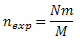

Functional classification
This analysis allows you to classify set of genes into groups.
Several types of classifications may be available for you,
for example, "Full gene ontology classification" (includes all groups
from GO database) or "GO (biological process)" (includes only groups representing biological process).
For this analysis you have to prepare input table having Ensembl genes as rows. If your data have different row identifiers, consider
using "%analysis:Convert table%" analysis first. Only row names are significant for this analysis; columns data is ignored.
%parameters%
Result
As the result of this analysis you will see the table where each row corresponds to the single group.
The following columns are always present in the result:
- ID: Accession number representing given group.
- Number of hits (n): Number of genes or other biological objects from the group matched to some rows in the input set.
Only groups for which n ≥ nmin are included into result.
- Group size (m): Total number of genes or other biological objects in the given group. n ≤ m.
- Expected hits (nexp): Number of hits expected in the random input set of given size.

where N is number of genes from the input set matched to any group in given classification and M is total number of genes which appear in given classification.
If n > nexp, then the group is over-represented. If "Only over-represented" option was set, all groups not satisfying this condition are excluded from the result.
- P-value (P): Hypergeometric p-value (cumulative distribution function of hypergeometric distribution) having m, M, n, N as parameters.
Only groups for which P ≤ Pmax are included into result.
- Hits: List of Ensembl IDs from the input set matched to the group. Note that number of Ensembl IDs might differ from n as classification internal objects might differ from Ensembl genes.
For example, GO uses gene symbols internally, and several Ensembl gene IDs may match to the same gene symbol.
More columns may present for specific classifications (e.g. group description). Column 'Level' if present means minimal number of steps necessary to achieve the root of classification hierarchy (thus higher values mean more specific and smaller groups).